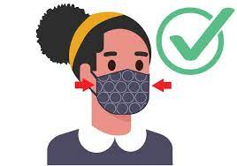

TODO ACERCA DEL COVID 19
El brote de coronavirus ha sido ampliamente reportado en los noticieros del mundo y la Organización Mundial de la Salud (OMS), lo ha declarado oficialmente como una pandemia, desde el pasado 11 de marzo. Esto significa que la enfermedad se está extendiendo en varios países de todo el mundo, al mismo tiempo afectando a cientos de miles de personas en todos los continentes, causando un número de muertes que, a la fecha, sigue en ascenso. Mientras las autoridades sanitarias trabajan para frenar su expansión y efectos en la población, traemos una guía sobre esta enfermedad y qué debemos hacer para prevenirla.
Los síntomas más habituales son los siguientes

Tos seca
Cansancio
PREGUNTAS Y RESPUESTAS FRECUENTES
1. ¿QUÉ ES EL CORONAVIRUS?
El coronavirus es un grupo de virus que causan enfermedades que van desde el resfriado común hasta enfermedades más graves como neumonía, síndrome respiratorio de Oriente Medio (MERS) y síndrome respiratorio agudo grave (SARS). Cabe destacar que la cepa de coronavirus (2019-nCoV) que ha causado el brote en China es nueva y no se conocía previamente.
2. ¿QUÉ ES LA COVID-19?
La COVID-19 es la enfermedad infecciosa causada por el coronavirus que se ha descubierto más recientemente. Ambos eran desconocidos antes de que estallara el brote en Wuhan (China) en diciembre de 2019.
3. ¿COMÓ SE ORIGINÓ EL CORONAVIRUS?
El 31 de diciembre de 2019, la Organización Mundial de la Salud (OMS) recibió reportes de presencia de neumonía, de origen desconocido, en la ciudad de Wuhan, en China. Rápidamente, a principios de enero, las autoridades de este país identificaron la causa como una nueva cepa de coronavirus. La enfermedad ha ido expandiéndose hacia otros continentes como Asia, Europa y América.
4. ¿A QUIÉN AFECTA?
Hay casos confirmados de coronavirus en casi todo del mundo, incluyendo China, Europa (siendo en Italia y España los primeros focos), Irán, Estados Unidos, África, Australia y LATAM. La Organización Mundial de la Salud (OMS) y la Organización Panamericana de la Salud (OPS) han reconocido el estado de pandemia, que supone el desarrollo de esta enfermedad. Es por ello que los viajes se han visto restringidos y muchos países ha cerrado sus fronteras, para tratar de evitar su expansión.
5. ¿QUÉ ES LA CUARENTENA Y QUÉ PAPEL JUEGA EN LA PREVENCIÓN DE LA COVID-19?
Es la separación y restricción de movimientos impuesta a una persona que puede haber estado en contacto con una fuente de infección pero que no tiene síntomas. El objetivo de la cuarentena es lograr que, en el caso de que la persona se hubiera infectado, no transmita a su vez la infección a otros. La realización de cuarentena sólo tiene sentido para aquellas enfermedades que se pueden transmitir durante el periodo asintomático, es decir, antes de que la persona muestre síntomas de enfermedad. Sobre la base de la información que se maneja actualmente se ha establecido una cuarentena de 14 días.
COMO PROTEGERSE
